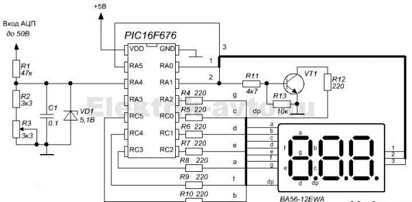
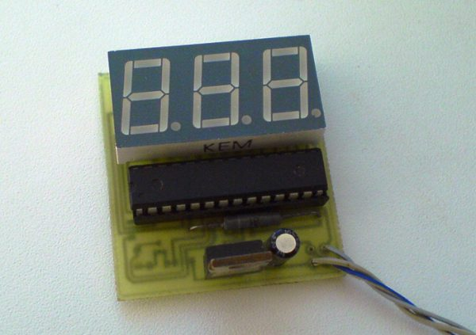

Цифровой вольтметр
Обычные мультиметры, включённые в режиме "AC", могут фиксировать лишь большие значения этого параметра с высокой степенью погрешности. При необходимости снятия небольших по величине показаний желательно иметь милливольтметр переменного тока, позволяющий производить измерения с точностью до милливольта.

Рис. 1 - Схема вольтметр переменного тока
Основное достоинство схемы (рис. 1) – предельная простота схемы и возможность измерять переменные напряжения с точностью до 0,1 В.
Для изготовления цифрового вольтметра целесообразнее всего воспользоваться программируемым микропроцессором типа РІС16F676. Тем, кто плохо знаком с техникой перепрограммирования этих чипов, желательно приобретать микросхему с уже готовой прошивкой под самодельный вольтметр.
Особое внимание следует уделить выбору подходящего индикаторного элемента на светодиодных сегментах. При этом предпочтение следует отдать прибору с общим катодом, поскольку число компонентов схемы в этом случае заметно сокращается.
В качестве дискретных комплектующих изделий можно использовать обычные покупные радиоэлементы (резисторы, диоды и конденсаторы).
После того, как плата готова, нужно разместить на своих местах все электронные компоненты (включая микропроцессор), а затем запаять их низкотемпературным припоем. Тугоплавкие составы в этой ситуации не подойдут, поскольку для их разогрева потребуются высокие температуры. Так как в собираемом устройстве все элементы миниатюрные, то их перегрев крайне нежелателен.
Для того чтобы будущий вольтметр нормально функционировал, ему потребуется отдельный или встроенный блок питания постоянного тока рассчитанный на выходное напряжение 5 В и выходной ток 0,5 А.
При сборке вольтметра важно следить за правильностью установки самого микропроцессора (он должен быть уже запрограммирован). Для этого необходимо найти на корпусе маркировку его первой ножки и в соответствии с ней зафиксировать корпус изделия в посадочных отверстиях.
Важно! Лишь после того, как есть полная уверенность в правильности установки самой ответственной детали, можно переходить к её запаиванию («посадке на припой»).
Иногда для установки микросхемы рекомендуется впаивать в плату специальную панельку под неё, существенно упрощающую все рабочие и настроечные процедуры. Однако такой вариант выгоден лишь в том случае, если используемая панелька имеет качественное исполнение и обеспечивает надёжный контакт с ножками микросхемы.

Рис. 2 - Вариант конструкции вольтметра переменного тока
В том случае, если при сборке платы не допущено никаких ошибок, схема должна заработать сразу после подключения к ней питания от внешнего источника стабилизированного напряжения 5 В.